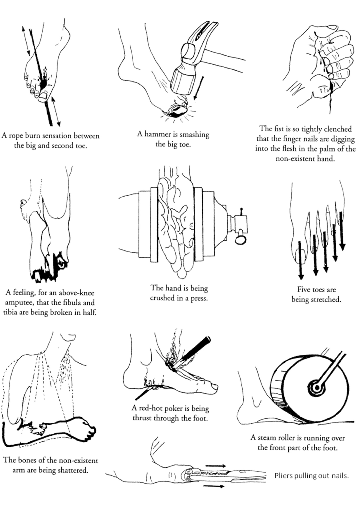
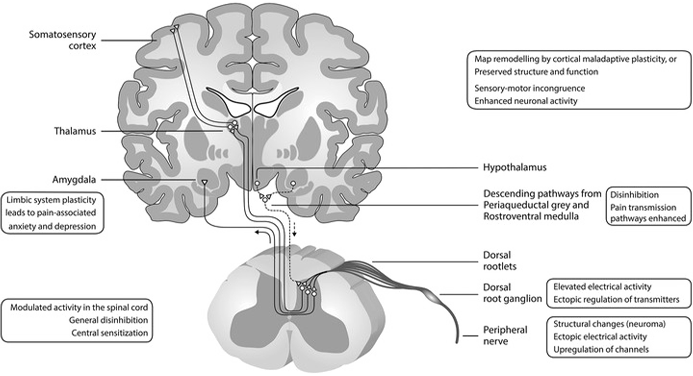

DICTIONARY
__ _ Act__ of__Digging_ ___ __
_ Amputation__ _ ___ _ __ _ ___
___ _ _ Embodied __ ___ Trauma __
__ Prosthetics __ _ _ ___ _ __
__✳︎_Click Each Words and Move to In-Depth Definition__✳︎


_ __ _ _ __ ___Web_Essay__ _ ___ by_ __ _ _ ___Hayoung__ _Yang__ _ _ ___ __ _
Phantom limb pain is not just a question of feeling, it is a bodily memory of the trauma that the body has incurred. This parallels the body of Gaza, Palestine, where being amputated into rubble under the decades of systemic occupation, restriction, destruction and genocide. On the ground of amputated land, a group of bodies in Gaza is experiencing a collective pain of no longer existing land, culture, home and community, they used to innately own just as their body part they are born with.
Both the experiences talk about a profound, unconscious desire to be one with the nerve system, the other with the land. As an amputee continues to feel the absence of a limb, an affected community suffers from a ‘phantom pain’ of absence, the desire to go back to the known territory of liberty and identity that they used to take as a right as a part of their body.
The act of digging is not just a physical activity but is also a concept of searching, investigating and reaching for memory or space to retrieve what was taken. The tunnels in underground Gaza are the nerve pathways that feel for a missing limb, hollow negative spaces excavated and created intentionally, to contain new memories and intentions as a vessel -like the body refusing to accept loss, intention of refusing to accept forced absence.
In this sense, the act of digging is a way of retrieving the embodied memories in the same manner that the feeling of a phantom limb is the way of one’s body trying to seek for what was there. In these parallel two cases, that of bodily pain or physical excavation, there is a persistent memory, a strong will to act, and an embodied claim of existence against forced deletion.
DICTIONARY
__ _ Act__ of__Digging_ ___ __
_ Amputation__ _ ___ _ __ _ ___
___ _ _ Embodied __ ___ Trauma __
__ Prosthetics __ _ _ ___ _ __
__✳︎_Click Each Words and Move to In-Depth Definition__✳︎
Phantom limb pain(PLP) is a condition in which the brain still generates sensations that a person believes to still be in a missing amputated limb. Despite the physical absence of the limb, individuals experience vivid and often painful sensations as if the limb still exists. These sensations, including pain, tingling, itching, or even the feeling of movement, can occur long after the amputation, causing a disconnection between the body’s physical reality and the brain’s perception(Fuchs et al. p.1). PLP is not a simple neurological problem, but a complex interaction between the body and the mind that remembers the whole.
As Fuchs et al. state, ,“Where the body remembers what has been lost.” This quote captures the essence of PLP: it is not only a perception but a form of embodied memory. The body, in a way, does not want to lose the limb, and thus continues to remember the limb in painful and non-painful ways. The inherent passivity in this experience is the fact that the body’s memory of the lost limb is involuntary; the pain or even the feeling of presence is the aftermath of a trauma.
_ _ ___ _ __ ___ _ __✳︎_Click__Floating__Words_to__Open_and__Hold!___ _ __ _ ____
The neurological basis of PLP is based on how the brain processes the sensory information from the body. When a limb is amputated, the brain does not delete the neural pathways associated with it. Instead, these neural circuits keep the “memory” of the lost limb and may continue to fire and cause the pain or the feeling of presence. This is related to the somatosensory memories of the affected limb, sensations that the brain stores even when the limb is no longer present in the body (Fuchs et al. p.5).
Pre-amputation pain is also a trigger for PLP. Studies show that the pain that a patient experiences before the amputation can persist as PLP after the surgery. This means that the brain does not simply delete the memory of pain from the affected limb, but instead keeps a neural imprint of pain that makes the pain seem continuous. This relationship is theory-driven and has been evidenced through retrospective accounts which state that the phantom limb sensations are similar to the pain or other sensations that the patient felt in the limb before it was amputated (Fuchs et al. p.5). The body’s memory of pre-amputation pain can be in such a way that it persists and haunts the individual, and thus, PLP is both a psychological and physical phenomenon.
PLP is not just a passive perception, but it is an active, though instinctive, psychosomatic expression of trauma. It is both inhabitation and use of the space of the body. The phenomenon shows how the body is closely related to its perception of integrity. Although the limb is missing, the mind and body still have a connection to it, and hence, there is a kind of “phantom sensation”, a feeling of being there when there is none. This is a painful memento of loss, not just a transient one, but a lasting one that does not want to be forgotten.
In this way, PLP goes beyond the physical, however it becomes traumatic. The brain’s persistence in recalling a missing limb is a manifestation of the body’s refusal to acknowledge the absence, as if the body itself is fighting the idea of finality in loss. The trauma is not only felt at the time of the amputation, but it also reverberates especially when the patient still feels the limb. Thus, the pain or the feeling of the phantom limb is not only a neurologic event, however it is a symbol of the body’s trauma and its attempt to keep what is no longer there.
This embodied memory, closely linked to both the somatic and the psychological, is a crucial aspect of why PLP is compelling to be considered as an bodily experience. The persistence of the phantom limb is an example of how the body is scarred by the trauma of losing a limb and how the memory of pain or presence continues to haunt the individual’s life even after the limb has been amputated.

The human body shows deep interactions between physical and mental elements when experiencing traumatic loss through phantom limb pain. Deeply rooted and embodied. PLP shows us through its underlying passivity that the body maintains awareness of the missing limb while the mind along with neural patterns continue to retain memories of the lost limb after amputation. The physical memory of pain functions beyond neurological responses because it creates an internal experience that perpetually reminds the body about past trauma. PLP demonstrates how both the physical body and mental self resist forgetting through the scars left by experience of loss.
Physical destruction of each bodies’ “home” along with displacement of families and reduction of vibrant communities they once had - to now rubbles, demonstrate multiple amputations within a group of bodies in Gaza. With amputated Gaza as limbs, group of bodies in Gaza is experiencing a shared "phantom pain" of no longer existing “sense of home” in which they used to own, familiarities that were coming from a family and community they used to belong, just as amputees feeling and missing their absent limbs.

'Gaza As A Body Amputated, Group of Bodies In Gaza Walking Through The Missing Limb'
The act of digging in Gaza is more than just a physical activity, however it embodies a form of resistance, and a search for missing fragments they have unwillingly lost. This particular form of digging a tunnel in Gaza could be seen as a type of reaction to the amputation that exists in this context. According to the testimonies from Gazans who has been to, or actually used the existing tunnel underground Gaza for certain reason, these tunnels were dug and built from the aim to re-establish their connection with lost freedom such as a right to travel without going through multiple checkpoints, or easier transportation of goods -materials for craft coming from adjacent countries such as Egypt Cairo- and crafts (Gharbiha, 2024; QamariaCraftsman, 2024).

'Digging of Tunnel In Gaza'
While digging a tunnel could be seen as a response to a lack of mobility or a transportation route, it also contains a significant meaning throughout their tunnel networks. Within the context of Gaza, the tunnels are not just existing as a passage, however they are being a vessel where a community engages in a reclamation of the past, a way to resist being erased from history (Gharbiha, 2024). These tunnels become metaphysical channels through which memories of pre-occupation life, familial bonds, and continuing the cultural practices including crafts, despite the surrounding systemic violences to interrupt and erase these connections, linking the entire body of Gaza.
Digging conceives a concept of outwarding activity which opposes the underlying passivity of phantom limb pain (PLP). The experience of PLP emerges from the passive memories of lost things that the body stores in its sensory experiences (Fuchs et al. p.5). The intentional process of digging functions as an active pursuit to find things that have been taken. PLP demonstrates an internal battle with loss and absence while the act of digging in Gaza functions as an external activity of refusal to passively remain and accepting forced disappearance.

'Entrance of One of the Longest Tunnel System in Gaza, Exposed by Israel'
Within the context of PLP, embodied trauma is the pain and sensorial experiences that occur both before and after amputation. This pain is not only physical but also psychological, linked to the memory of the missing body part. The trauma is due to the sensory system of the body trying to make sense of the loss and the brain still ‘feeling’ sensations that are no longer there. It is observed in sensation experiences where the individual remembers the limb even though it is no longer there and still experiences pain, itching or tingling as if the limb was still there (Fuchs et al. p.1).
In Gaza, embodied trauma is also different but similar in that, it also applies across generations. Trauma is not just an individuals’ bodily experience, however it is more likely collectively getting haunted and feeling pain, and it is rooted in the experience of displacement after being amputated from own houses "one have built bit by bit", repeating violence and oppression that are being repeated for decades (Shalhoub, 2024). People of Gaza are seeing and feeling the phantom of what has been torn out from them.
As Nadera Shalhoub explains in the video “There is So Much Love in Palestine”, the trauma of losing homes, family members and basic rights as a human being is internalised in the daily acts of resistance. [–Explained in detail in the video, please click on the floating video at the right edge of the screen.] The trauma is experienced in action (bodily) embodied experiences where the community engages in the process of digging (- to be elaborated at 4. The Act of Digging) as a way of resisting and affirming their presence against the forced loss of their land and identity. Just as with phantom limb pain, the act of digging is a reaction to an unresolved, ongoing trauma.
Click to start "There is So Much Love in Palestine" with Nadera Shalhoub, Mar 2024

Amputation in PLP is the actual removal of a body part, usually a limb. It is an irreversible loss that the body has to learn to cope with (Fuchs et al. p.1). However, even after the amputation, the brain does not simply forget the lost part, it holds onto memories of it, which results in what is known as phantom sensations or pain (Fuchs et al. p.5). Amputation, in this context, is not only physical but is also psychological, as the body and mind are left to cope with the loss of something that used to be a part of one’s body and that one used to be able to function with.
The strip of Gaza has gone through and is still experiencing multiple amputations. The land together with culture, history, community and freedom have undergone amputation because of the occupation, systemic violence and geopolitical restrictions throughout the years (Shalhoub, 2024). The forced displacement from their homeland creates a sensory experience of disconnection from their familiarities.The people of Gaza, as amputees do, experience the similar pain coming from the loss in a point of view of where they have lost a sense of home, culture and their freedoms.
In “Letter from Gaza”, 1956, Kanafani refers to Nadia's amputated leg, a symbol of the separation which extends beyond physical body loss to impact the essence of identity and existence of Palestinians (Berger, 2008). The traumatic experiences within Gaza, and the people of Gaza refusing to accept the loss from what was taken, drives the ongoing seek of reclamation, much like the amputee who still feels the pain of a missing limb.
Click to start "Letter From Gaza" by Ghassan Kanafani, read by John Berger, 2008
The term “phantom” in PLP is the missing limb, the part of the body that is no longer there physically but is still felt by the person (Fuchs et al. p.1-2). It stands for the brain’s capacity to keep the memories of the lost part in the body map even when the part is no longer physically present (Fuchs et al. p.1-2). The phantom limb is not just a neurologic response, but it is a manifestation of the brain’s refusal to accept the absence of what used to be. The experience of the phantom limb is an embodied memory of the former completeness of one’s body, which continues to haunt the individual even when the body is physically whole.
Gaza itself is a concept of “phantom”. The land has unwillingly lost both its ground and cultural identity and people's sense of self. The people of Gaza experience a phantom connection to their ‘home’ under the circumstance of their land remaining under occupation while their houses get demolished and their freedom remains restricted (Shalhoub, 2024).
To a father, who was yelling “this is my son, my son is here!”, holding his son’s scattered body parts in plastic bags (Shalhoub, 2024). He is still feeling the presence of his son. He is still seeing the phantom of his son. Refusal to accept the loss since it is an indescribably painful reality.
The “phantom” in this context describes the enduring emotional bond between people and their land despite physical separation. The loss manifests through missed possibilities combined with destroyed futures and interrupted relationships because of separations within family and deaths (Shalhoub, 2024). This “phantom” enacts more than a lost body part since it embodies the sharing memory of people who maintain their connection to their lost sense of home.
_ _ ___ _ __ ___ _ __✳︎_Click__Floating__Words_to__Open_and__Hold!___ _ __ _ ____
In the context of PLP, the word 'digging' is an analogy for the continuous process of looking for something which has been missing. In this case, the search is for the lost limb. The individual with PLP is always ‘digging’ into their own sensory memories, searching for the limb that is no longer there. This search is a persistent, embodied action of the mind attempting to come to terms with the loss, and reconnect with the missing part of the body. In this case, the act of digging is, therefore, physical and mental, and is rooted in the trauma of the loss and the brain’s ongoing attempt to find the missing piece.
Digging is symbolic of the physical and psychological trauma inflicted on the people of Gaza. The act of digging in Gaza is also both an action of a metaphorical and literal search, investigation and reclaiming. It is not only about digging tunnels for survival or for better transportation routes, but about a profound, embodied search for lost land, culture and freedom. The digging becomes a bodily action, in which the community is actively fighting against the systemic violences that wanted to erase their existence.
Nadera Shalhoub, in "There is So Much Love in Palestine", describes how the Palestinians fight against the occupation and violence. Mentioning “every power has its counterpower”, she explains how Palestinians escaped from the prison, using the simplest tool– spoons, digging their own way out to the liberation (Shalhoub, 2024).
It is like using an amputated arm -The skin of the stub that is relatively much fragile compared to the whole arm, the difference in skill and strength that comes from perfection- to dig a hole, digging a wall and digging a tunnel with their bare hands and fingers as a rake, spoon as a bulldozer instead of a solid metal machineries.
This act of digging is a form of agency, a bodily, outwarding activity of resistance. Each tunnel dug, much like the body's search for a phantom limb, is an act of survival, memory, and the desire to reconnect with what was lost - just with their bare hands - fingertips with dirt, incomparably stronger than any other mechanical power. Resistance.

The prosthetic in PLP means an artificial substitute or addition for the missing limb. Prosthetics in any form from mechanical limbs to other types of aids help the body function again or to replace missing body parts after amputation. A prosthetic might never provide a complete substitute for the original body part since it represents a mechanical compromise that lacks full functionality. However, the prosthetic functions as a physical manifestation of the body's continuous attempt to accept loss through integration into a modified personal identity.
In Gaza, the prosthetic also takes on a metaphorical role. Imagining the process of reconstructing buildings from the rubble to new spaces, mirrors the way a prosthetic works to replace missing body parts. This representation symbolises the community's desire – “a digging” – to rebuild what has been destroyed while working toward restoring functionality to a society that has lost its connection to its heritage and history as well.
The rubble of demolished homes serve as the material that the people of Gaza use to reconstruct their sense of home, identity, and community. Rebuilding demands a relationship between materials (rubble, soil, stone) and space similar to prosthetics which need precise mechanical interfaces to connect with the body thus healing the damaged landscape.
In both PLP and Gaza, the concepts of embodied trauma, amputation, phantom sensations, prosthetics, and digging are important terms for the ongoing struggle to reclaim what has been lost. Whether through the body’s passive remembrance of a missing limb or the community’s active resistance through the act of digging, both experiences reveal the counter-power and resilience of the human spirit in the face of trauma and loss. These key terms allow to see the ways in which memory, loss, and the desire for reclamation play out in the physical body and the socio-political landscape of Gaza.
'Series of Study Drawing: Relationship Between The Human Body and The Act Of Digging.'
'Imaginative Parallel Drawing of Nerve System Inside the Brain and Tunnel System Underground of Gaza'
"Throughout the pedicure, the woman sways her head from side to side, eyes half-closed. She moans with relief when you massage her one calf. When you finish, turning to me for the towel, she leans over, gestures toward her right leg, the nub hovering above the water, dry this whole time.
She says, "Would you mind," and coughs into her arm. "This one also. If it's not too much." She pauses, stares out the window, then down at her lap. Again, you say nothing-but turn, almost imperceptibly, to her right leg, run a measured caress along the nub's length,
before cradling a handful of warm water over the tip, the thin streams crisscrossing the leathered skin. Water droplets. When you're almost done rinsing the soap off, she asks you, gently, almost pleading, to go lower. "If it's the same price anyway," she says.
"I can still feel it down there. It's
silly, but I can. I can.""
(Vuong, 2019, p. 81-82)

'A Stub, Amputated Arm, Prosthetic, Flesh Meeting Metal'
In the case of PLP, prosthetics are used to replace or supplement the amputated limb. Amputation within a body part requires adaptation of one’s body and prosthetics is being a tool that helps in this process of adaptation for an amputee. The prosthetics enable the body to operate again although it is still not perfectly recreating the missing limb or biologically identical to the missing part, it acts as a mechanical and functional extension of the body and enables the amputee to do things they were capable of before the amputation.
This replacement functions as an interface between the flesh of the body itself that is still feeling the familiar, embodied memories of the missing limb and the unfamiliar, mechanically built artificial part.

'Prosthetic being more than a Substitute, Prosthetic as a Supplement'
In Gaza, the concept of prosthetics is not limited to the physical context. Like the prosthetics being used to replace a missing body part, the rebuilding of the structures, the digging of the tunnels, and the reclaiming of Palestine can be regarded as ‘prosthetics’ for the amputated land, culture, and community. Gaza has been deprived of its land, its people have been displaced, and its culture has been undermined.
In response to these losses, the reconstruction and the digging of tunnels are a way to heal the wounds inflicted by systemic forces, to create spaces in which identity, resistance and cultural memory can be kept and strengthened. These “prosthetics” are not only physical structures but also acts of cultural resistance and re-connection. Through this rebuilding, Gaza tries to return to its ‘home’ where familiarities and histories remain, showing the counterpower against the erasure of its identity.

'Group of Bodies in Gaza Attending Friday Noon Prayers Among The Rubble. Solid meeting Void.'
A prosthetic, whether it is a simple mechanical tool or a sophisticated technological device, acts as an interface between two contrasting materialities, the limb with scar, and the artificially built body part. The way of the prosthetic is crafted is – first building an internal base structure with titanium, aluminium or stainless steel– making an interfaces using thermoplastic, acrylics, silicone and polyurethane for the part meeting with body– inserting microprocessor or sensors for joint system– and finally covering up the external, using foam, silicone skin for appearance and applying gel liner to give a comfortness and flexibility.
'Relationship Between Mechanics and Human Body. Machine and Flesh. Metal and Meat.'
Looking into the process of how it is crafted, it is able to find a paralleling relationship with architectural construction starting from an internal structure to the external details, also the materials used for prosthetics are also commonly being used in constructing a building. Prosthetic is not just a simple craft, however it is a process of reconstructing one’s body, configuring these materials to work together to form a body part that not only substitutes for the missing limb, but also enables the amputee to feel whole and continuous again.
In the same way, the reconstruction of Gaza’s infrastructure after decades of destruction and the digging of tunnels can be regarded as prosthetic healing of the land. After bombings, destruction, and displacement, Gaza’s rebuilding efforts use the materials at hand—rubble, concrete, soil, and steel —much like prosthetics use artificial materials to replace lost parts of the body. These materials will be used as the basis for the reconstruction of not only physical space but also the restoration of the identity of Gaza, its people and their culture.
They are not just physical structures, however they are going to be metaphorical acts of reclamation, a way to rebuild what has been torn apart and to fight against the imposed void. Just like a prosthetic helps an amputee to live with one’s new reality, when imagining the rebuilt infrastructure in Gaza, in the context of the “return” after the liberation, could help the community live with its new reality, while also fighting to reclaim the parts of their identity that were violently deconstructed.

'Prosthetics in Gaza as an Act of Reclamation. Group of Bodies in Gaza Celebrating Ramadan Among the Rubble. Solid meeting Void. Again.'
The spatial sensations in Gaza experience temporal changes because of the continuous process of destruction followed by temporal reconstruction. The process of digging functions as a dialogue between the empty spaces after countless destructions and the physical exploration of redefined extra spaces dug underground. It contains dual purposes while it builds literal underground passages but also simultaneously fills up alternative stories within subtracted spaces.
The phantom limb pain and the act of digging both require continuous interaction within the relationship between what exists and what does not exist, and between what has been lost and what has been resisted to be reclaimed. The temporal nature of spatial and bodily sensations demonstrates that all losses remain present in certain forms. The denial or refusal of accepting lost things leads to keep ongoing experiences of resistance happening within both physical body parts and the context of the land, home and communities.
Imagining the context of liberation in Gaza, all displaced groups of bodies return to their home, however everything is destroyed into rubble, requiring tonnes of repair. It is re-building a city, re-stitching a body, a limb from scratch where presence of home and spaces of familiarities remain only as a phantom, in the memories. Quoting Kader Attia, Repair is Returning back to its original state. The concept of repair as a return to the original, is not by erasing scars, but repairing is by embracing trauma as part of the embodied memory.
“Repair defines a space through time. In other words, there is no way to understand repair without the wounds that were inflicted in the past. Repair is actually an oxymoron. When we think repair, we actually think injury. The injuries are always somewhere, they cannot be evacuated. This notion derives from the Latin "reparare," which means to restore, that is to return to the original state of the thing or idea. In reality you never return something to an original state. You return only to the idea of an original state (Attia, 2022).”
Although the ‘return’ happens, it is impossible to rewind back to the original state before all the trauma and amputations, which are irreversible bodily experiences. No matter how much will be rebuilt, re-stitching amputated limbs back to an original whole body as a Gaza and erasing all embodied memories is also impossible.
“These two states of the injured object and of the repaired object are likewise defined by time. Time is space, for without a movement through time we would not move through space either. This may sound very philosophical, but there is no denying it. However, repair, particularly for an artist, creates an interstitial space in which we can elaborate a new and deeper understanding of the object and the world in which we live. I am deeply convinced that repair can help us understand the blind spots of modernity. This understanding that repairing an object isn't meant to erase the damage or injury is not an invention of art, but, as I said, deeply rooted in pre-modern societies (Attia, 2022).”
As Attia mentions, here two different concepts collide but blend together – Time and Space. The group of bodies who have already gone through multiple amputations from the body of Gaza have passed through the ‘time’ of pain, phantoms, and embodied traumas. Just returning to the same ‘space’ doesn’t magically erase or rewind those times.
Therefore, repairing and rebuilding Gaza is not about returning to the original state where all the pain and amputations haven’t happened yet, but rather constructing the prosthetics that are layered and attached on top of these remaining stubs. This will evolve as an architectural project that is researching on the crafting of Gaza’s prosthetics in the context of the ‘re-build’, addressing the parallels and collision between bodily sensations, time, space and the act of repairing.
[Reference List]
Attia, K. (2022). Repair Cannot Only Be a Metaphor, It Thrives on Action. [online] The Great Repair. Available at: https://archplus.net/en/archiv/english-publication/The-Great-Repair/#article-7081 [Accessed 15 Mar. 2025].
Craftsman, Q. (2024). Testimony of using Gaza underground tunnel linking Cairo, Egypt and GazaCity. [Conversation].
Fuchs, X., Flor, H. and Bekrater-Bodmann, R. (2018). Psychological Factors Associated with Phantom Limb Pain: A Review of Recent Findings. Pain Research and Management, 2018(5080123), pp.1–12. doi:https://doi.org/10.1155/2018/5080123.
Gharbiha, Y. (2024). Testimonies about Underground Tunnel, Gaza. [Zoom Call].
Makdisi Street (2024). ‘There is so much love in Palestine’ w/ Nadera Shalhoub-Kevorkian. [online] YouTube. Available at: https://www.youtube.com/watch?v=cw3Y-6GqytM [Accessed 7 Apr. 2025].
The Palestine Festival of Literature (2024). John Berger Reads Ghassan Kanafani’ s ‘Letter from Gaza’. [online] YouTube. Available at: https://www.youtube.com/watch?v=-ThCEzFWLOQ [Accessed 24 Mar. 2025].
Vuong, O. (2019). On Earth We’re Briefly Gorgeous By Ocean Vuong : Ocean Vuong : Free Download, Borrow, and Streaming : Internet Archive. [online] Internet Archive. Available at: https://archive.org/details/on-earth-were-briefly-gorgeous-by-ocean-vuong.org/page/n81/mode/2up [Accessed 12 Mar. 2025].
[Image Reference List]
AL-QATTAA, O. (2025). This aerial view shows displaced Palestinians returning to Jabalia in the northern Gaza Strip on January 19, 2025. Times of Israel. Available at: https://www.timesofisrael.com/gazans-stream-home-through-rubble-as-truce-starts-after-15-months-of-war/ [Accessed 13 Apr. 2025].
AP Television (2013). Egyptian army personnel supervise the destruction of tunnels between Egypt and the Gaza Strip at the border, near the town of Rafah, northern Sinai, Egypt. Times of Israel. Available at: https://www.timesofisrael.com/egyptian-army-destroys-13-more-gaza-tunnels/ [Accessed 13 Apr. 2025].
Flor, H. (2006). Figure 2: Cortical Changes Related to Phantom Limb pain. Nature. Available at: https://www.nature.com/articles/nrn1991 [Accessed 13 Apr. 2025].
Hunter, S. (1980). Left: ‘Third Hand’, Stelarc, Tokyo, Yokohama, Nagoya 1980. Photographer: Simon Hunter. Right: ‘Third Hand Diagram’, Stelarc, Tokyo, Yokohama, Nagoya 1980. Sleek. Available at: https://www.sleek-mag.com/article/stelarc-interview-posthumanism/ [Accessed 13 Apr. 2025].
Kathib, S. (2024). In This Aerial view, Palestinians Attend Friday Noon Prayers in Front of the Ruins of the al-Faruq mosque, Destroyed in Israeli Strikes in Rafah in the Southern Gaza Strip on March 1, 2024. AlJazeera. Available at: https://www.aljazeera.com/news/2024/3/2/israels-war-on-gaza-list-of-key-events-day-148 [Accessed 13 Apr. 2025].
Kira Mason, Who Lost an Arm in the London Terror Attacks. (2008). Advanced Arm Dynamics: Fused. Available at: https://aad.typepad.com/weblog/2008/12/fused.html [Accessed 13 Apr. 2025].
Pellegrin, P. (2012). A new tunnel owner, in [a] white cap, watches his son descend into a well shaft to continue digging. Wealthy owners can afford mechanized winches, but this man, who saved for years to get a share of the tunnel trade, must rely on his family and a horse. national geographic. Available at: https://www.npr.org/sections/pictureshow/2012/11/19/165506231/rockets-cigarettes-and-a-lion-just-a-few-of-the-things-smuggled-into-gaza [Accessed 13 Apr. 2025].
Petersen, B. (2018). Available at: {https://onlinelibrary.wiley.com/doi/full/10.1002/mus.26294}, eprint = {https://onlinelibrary.wiley.com/doi/epdf/10.1002/mus.26294}, journal = {Muscle & Nerve} } [Accessed 13 Apr. 2025].
Saife, M. (2025). Hundreds of Palestinians arrive for iftar among the rubble of Rafah in southern Gaza, during the first day of Ramadan on Saturday. CBC. Available at: https://www.cbc.ca/news/world/israel-gaza-ceasefire-talks-1.7472338 [Accessed 13 Apr. 2025].
Thakur, T. (2024). The Third Thumb. a2dgc. Available at: https://a2dgc.com/the-third-thumb/ [Accessed 13 Apr. 2025].
The War Amps (2013). Common Types of Phantom Limb Pain. The War Amps National Amputee Centre. Available at: https://www.las-cruces-prosthetics.com/wp-content/uploads/Pain-and-Phantom-Limbs.-War-Amps-2013.pdf [Accessed 13 Apr. 2025].
Yang, H. (2025). Imaginative Parallel Drawing of Nerve System inside the Brain and Tunnel System Underground of Gaza.
Yang, H. (2025). Series of Study Drawing: Relationship Between The Human Body and The Act Of Digging.
[Bibliography]
Diller, E., Scofidio, R., Georges Teyssot and Scofidio, D. (1994). Flesh : architectural probes. New York: Princeton Architectural Press.
Puar, J.K. (2017). The Right to Maim: Debility, Capacity, Disability. Durham: Duke University Press.
Smith, D.G. and Skinner, M.H.B. (n.d.). Current Diagnosis & Treatment in Orthopedics, 5th Ed. Amputations. Available at: https://doctorlib.org/orthopedics/diagnosis-treatment-orthopedics-5/11.html.